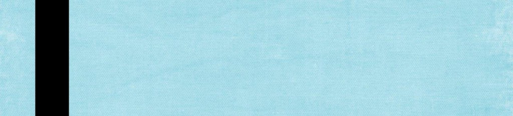

Work Experience
Web Developer Jun 2016 – Current
Developed a WordPress based ecommerce web site for a local client. Implemented the complete web site with features such as – store theme, social media, checkout with PayPal
and stripe. As a part time web developer to create the ACC departmental web sites using WordPress, converted a static web page into a WordPress based website. Designed the look and feel,
and used a theme supporting responsive website.
Responsibilities:
- Designed the web site using WordPress.
- Web page design using HTML5, CSS3, PHP, JavaScript and jQuery.
- Implemented and customized the theme as per requirement.
- Implemented responsive design to be mobile device friendly.
Capstar Forensics, Freelance Test Engineer Austin, TX Nov 2015 – Current
Involved in the testing of the Network capture analysis tool. Running feature, regression
and UI testing of the product.
Responsibilities:
- Involved in writing Test cases.
- Involved in Functional, Feature and Regression Testing.
- Involved web based GUI Testing.
- Using Redmine to manage defects and issues and monitor the defects for successful resolution.
Gemalto, Austin, TX Validation Engineer Oct 2013 – Oct 2015
Currently is part of the validation team for the FileSafe, CloudEntr and MobileId product development. Responsible for doing the validation activities including regression, feature
and functional validation, on the various features to make sure the product is defect free. Developed the test automation suites, using Selenium, to automate the web based GUI
testing and using SoapUI, to automate API testing. The suites included a suite for sanity tests that was running everyday on Jenkins and a suite for feature testing. Developed the
Load test suite using Grinder for API Testing.
Responsibilities:
- Involved in analyzing and designing the testing methodology.
- Involved in writing Test cases.
- Involved in Functional, Feature and Regression Testing.
- Developed Web interface for the load test configuration tool.
- Developed SoapUI and Selenium based automation suites to run feature and sanity tests.
- Developed Grinder based test suite for load testing.
- Involved in application and web based GUI Testing.
- Performed System Testing, which includes functionality testing, Browser compatibility testing and Regression Testing.
RGB Networks, Austin, TX System Software Test EngineerJan 2012 – Aug 2013
RGB Networks develops video delivery products that help video content providers to deliver
the video in the latest IP format to various devices including the desktop and mobile
devices. Is part of the system test group responsible for testing the packager and the
transcoder products and develop test automation tools. The test cases cover the web based
User interface and the application.
Responsibilities:
- Involved in analyzing and designing the testing methodology.
- Involved in writing Test cases.
- Developed Web interface for the test configuration tool.
- Developed automation tools to do bulk configuration of multiple systems.
- Involved in application and web based GUI Testing.
- Performed System Testing, which includes functionality testing, Integration,
Validation, compatibility and Regression Testing.
- Used Bugzilla to log defects and monitor the defects for successful resolution.
- Executed test cases and verified the actual results against expected results.
Technical Skills:
Languages: Java
Web Development Tools: HTML, CSS, PHP, Photoshop, WordPress and JavaScript
Testing Tools: Selenium, SoapUI, ANT, MAVEN, Jenkins, Grinder/Jython, TestNG, JUnit, Firebug
Test Management Tools: Jira, TestLink, RedMine.
Scripting: Linux Shell Scripts, Groovy scripts, Python
Others: Mercurial, Bugzilla, MS Sharepoint, Wiki.
Document Tools: MS Office
Operating Systems: Windows XP, Windows 7 and Linux
Database: SQL, MS SQL Server
